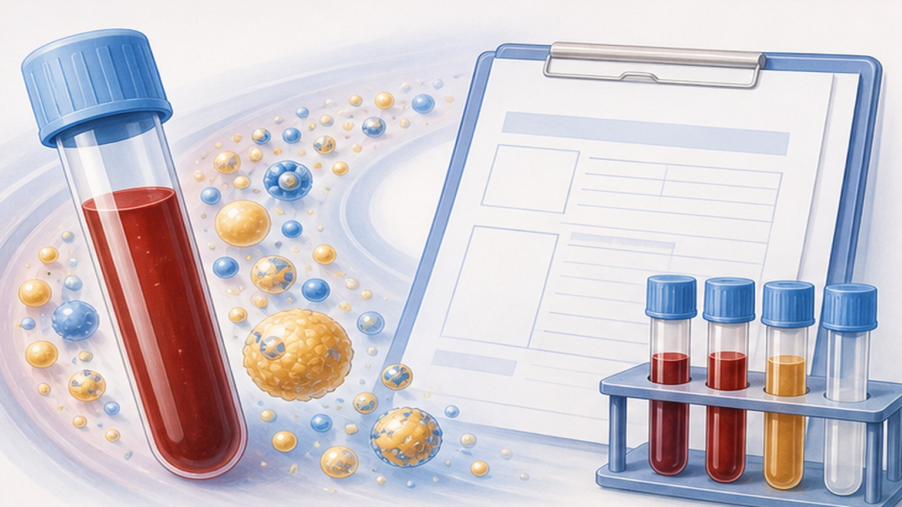
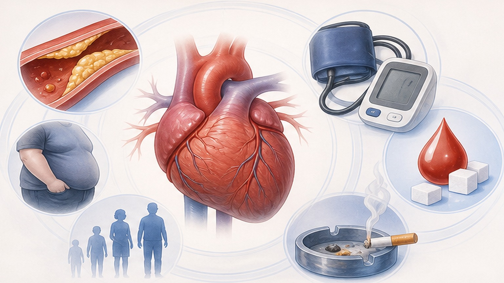
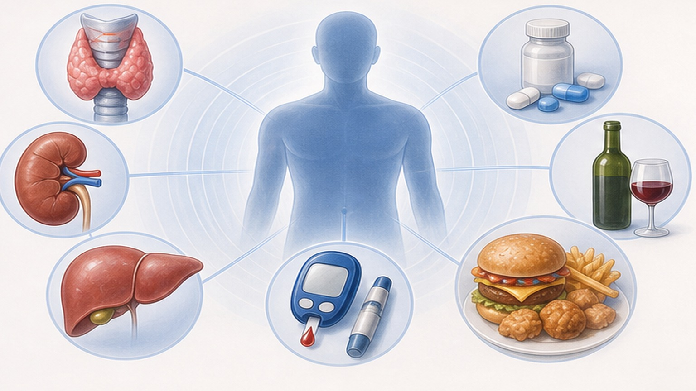
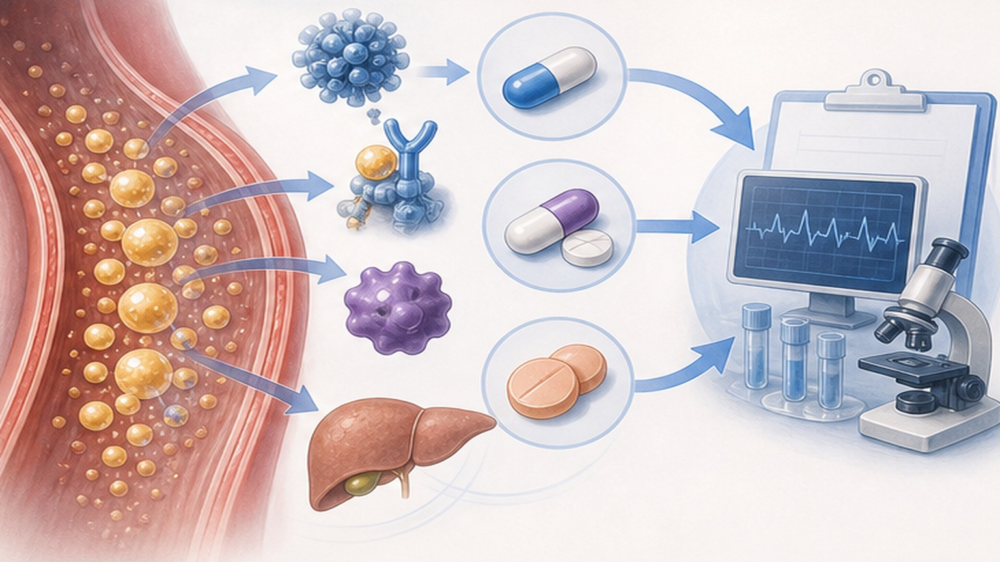

이상지질혈증,
수치를 알면 혈관이 보입니다
고지혈증 (이상지질혈증 · Dyslipidemia) — 진단 기준, 위험도별 치료 목표, 약물·생활 관리
이상지질혈증은 혈관 안에서 천천히 진행하는 병입니다
LDL-콜레스테롤이 혈관벽에 쌓여 죽상경화반(plaque)을 만듭니다 — 증상 없이 수년에 걸쳐 진행
이상지질혈증 (Dyslipidemia) 이란
총콜레스테롤·LDL·중성지방이 높거나 HDL이 낮은 상태 — 동맥경화의 출발점
혈액 속 지질(콜레스테롤·중성지방) 수치가 정상 범위를 벗어난 상태 — 한 가지만 비정상이어도 진단됩니다.
과잉 LDL은 혈관 내피로 들어가 산화되고, 대식세포가 이를 삼켜 거품세포(foam cell)가 됩니다. 이들이 쌓여 죽상경화반(plaque)을 만들고 혈관을 좁히면 협심증·심근경색·뇌졸중·말초동맥질환으로 진행합니다. 핵심은 "혈관에 자국을 남기기 전에" 수치를 관리하는 것입니다.
한국인 이상지질혈증 진단 기준
아래 4개 항목 중 한 가지 이상 해당되면 이상지질혈증으로 진단합니다 (단위: mg/dL)

위험도별 LDL 치료 목표치
심혈관 위험도(ASCVD risk)에 따라 목표 수치가 달라집니다 — 위험이 높을수록 더 낮게
LDL을 제외한 심혈관질환의 5가지 주요 위험인자
아래 위험인자 개수로 위험도(저·중등도·고·초고위험군)를 분류합니다

이차성 이상지질혈증의 원인
LDL·중성지방을 올릴 수 있는 식사·약물·동반 질환·대사 이상

스타틴별 LDL 감소율
한국인에서 스타틴 종류·용량에 따른 LDL-C 평균 감소 효과 (%)
스타틴만으로 부족할 때의 추가 약제
LDL 목표 미달, 부작용으로 증량이 어려운 경우 병합 요법 또는 새 계열 사용

생활 습관, 약만큼 중요합니다
LDL을 자연스럽게 낮추고 약효를 최대로 끌어올리는 식사·운동 원칙
- 채소·통곡물·콩·생선 위주 식단 (지중해식)
- 등푸른 생선 주 2회 이상 (오메가-3)
- 주당 150분 중강도 유산소 운동
- 체중 5~10% 감량 — LDL·TG 동시 개선
- 식이섬유 25~30 g/일 (귀리·콩·과일)
- 금연 — 가장 빠른 HDL 상승 효과
- 트랜스지방 — 마가린·튀김·과자류
- 포화지방 — 삼겹살·갈비·버터·치즈 과량
- 과당 음료·정제 탄수화물 (TG 상승)
- 음주 — 남성 2잔/여성 1잔 초과 (TG 상승)
- 임의로 약 중단 — 수치 반등하면 위험
- 건강기능식품 단독 의존 (효과 제한적)
오늘 꼭 기억할 핵심 8가지
이상지질혈증은 평생 관리하는 만성질환 — 수치를 알면 위험을 줄일 수 있습니다
건강한 혈관은
꾸준한 관리에서 시작됩니다
정기적인 검진과 약물·생활 관리를 함께 — 궁금한 점은 언제든 문의해 주세요
광교중앙로 298, 4층
토요일 08:30~13:30
같은 자료를 다시 볼 수 있어요